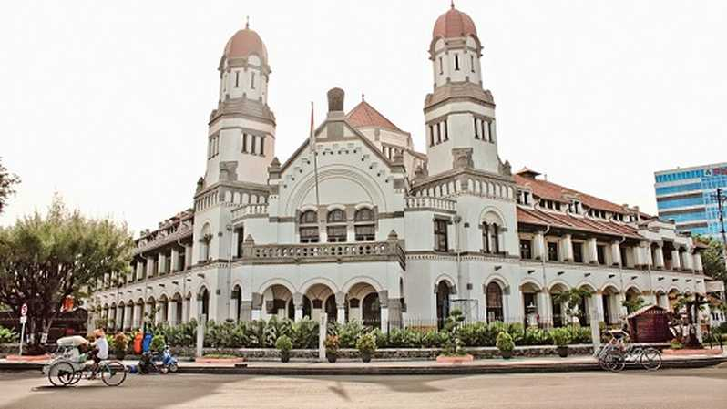
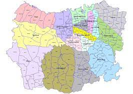

Pemerintah Kota Semarang
| Pemkotsemarang | |

|
Pemkotsemarang |

|
semarangkota@semarangpemkot.go.id |

|
semarangpemkot |
Sejarah
Sejarah Kota Semarang Jawa Tengah berawal kurang lebih pada Abad ke-8 M, yaitu daerah pesisir yang bernama Pragota (sekarang menjadi Bergota) dan merupakan bagian dari kerajaan Mataram Kuno. Daerah tersebut pada masa itu merupakan pelabuhan dan di depannya terdapat gugusan pulau-pulau kecil. Akibat pengendapan, yang hingga sekarang masih terus berlangsung, gugusan tersebut sekarang menyatu membentuk daratan. Bagian kota Semarang Bawah yang dikenal sekarang ini dengan demikian dahulu merupakan laut. Pelabuhan tersebut diperkirakan berada di daerah Pasar Bulu sekarang dan memanjang masuk ke Pelabuhan Simongan, tempat armada Laksamana Cheng Ho bersandar pada tahun 1405 M. Di tempat pendaratannya, Laksamana Cheng Ho mendirikan kelenteng dan mesjid yang sampai sekarang masih dikunjungi dan disebut Kelenteng Sam Po Kong (Gedung Batu).
Pada akhir abad ke-15 M ada seseorang ditempatkan oleh Kerajaan Demak, dikenal sebagai Pangeran Made Pandan, untuk menyebarkan agama Islam dari perbukitan Pragota. Dari waktu ke waktu daerah itu semakin subur, dari sela-sela kesuburan itu muncullah pohon asam yang arang (bahasa Jawa: Asem Arang), sehingga memberikan gelar atau nama daerah itu menjadi Semarang
Geografis
Kota Semarang terletak antara garis 6° 50' - 7° 10' Lintang Selatan dan garis 109° 35'- 110° 50' Bujur Timur. Dibatasi sebelah Barat berbatasan dengan Kabupaten Kendal, sebelah Timur berbatasan dengan kabupaten Demak, sebelah Selatan berbatasan dengan kabupaten Semarang dan sebelah Utara dibatasi oleh Laut Jawa dengan panjang garis pantai meliputi 13,6 Km. Ketinggian Kota Semarang terletak antara 0,75 sampai dengan 348,00 di atas garis pantai. Secara administratif, Kota Semarang terbagi atas 16 wilayah Kecamatan dan 177 Kelurahan. Luas wilayah Kota Semarang tercatat 373,70 Km2. Luas yang ada, terdiri dari 39,56 Km2 (10,59%) tanah sawah dan 334,14 (89,41%) bukan lahan sawah. Menurut penggunaannya, luas tanah sawah terbesar merupakan tanah sawah tadah hujan (53,12%), dan hanya sekitar 19,97% yang dapat ditanami 2 (dua) kali. Lahan kering sebagian besar digunakan untuk tanah pekarangan/tanah untuk bangunan dan halaman sekitar, yaitu sebesar 42,17% dari total lahan bukan sawah.
Kota Semarang
Semarang Kota Atlas

Informasi Lainnya
| Negara | Indonesia |
|---|---|
| Hari jadi | 2 Mei 1547 |
| Luas Total | 373,70 km2 |
| Bahasa Daerah | Jawa |
| Kode Telepon | +62 22 |